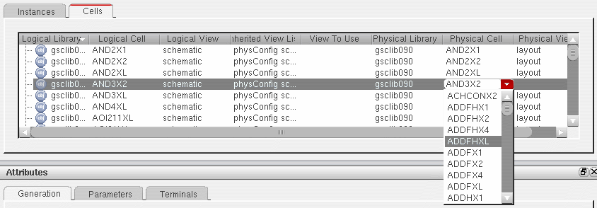
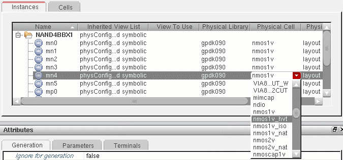
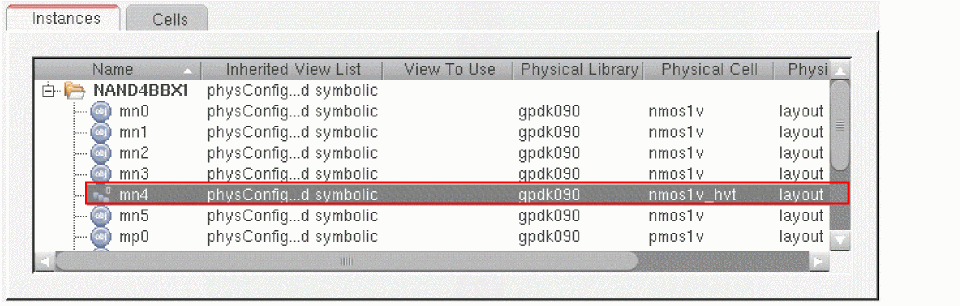

Specifying Logical to Physical Mappings for the Components in CPH
You can use the Configure Physical Hierarchy window to specify the logical to physical mappings for the components in your design. You can specify the mapping at the cell-level, in which case all instances of that cell inherit the mapping you specify, or you can override the cell-level setting for one or more instances or occurrences in your design.
Specifying the Mapping for a Cell
To specify the logical to physical mapping for a cell:
-
With the design loaded, choose Launch – Configure Physical Hierarchy from the Layout XL window.
The Configure Physical Hierarchy window is displayed. - In the Configure Physical Hierarchy window, click the Cells tab.
-
Click the row containing the cell for which you want to change the mapping.
The row is highlighted. -
Double-click the text in the Physical Cell column.
The Physical Cell entry becomes a drop-down list containing the names of all the available views for the cell in question. -
Choose the cell name you want from the list and press
Returnto confirm the setting.
 -
In the same way, select the Physical View to use and press
Returnto confirm the setting.
The logical to physical mapping for the cell in question is changed. -
From the menu bar, choose File – Save to save the physical configuration view.
The next time you generate or update the layout view, the system uses the new view for that cell instead of the one previously specified.
Specifying the Mapping for an Instance or Occurrence
To change the logical to physical mapping for a single instance or occurrence:
- In the Configure Physical Hierarchy window, click the Instances tab.
-
Click the row containing the instance for which you want to change the mapping.
The row is highlighted. - Do one of the following:
-
Double-click the text in the Physical Cell column.
The Physical Cell entry becomes a drop-down list containing the names of all the available views for the cell in question. -
Choose the cell name you want from the list and press
Returnto confirm the setting.
 -
In the same way, select the Physical View to use and press
Returnto confirm the setting.
The logical to physical mapping for the instance in question is changed. If you specified an occurrence mapping, the symbol is also changed to indicate this.
 -
From the menu bar, choose File – Save to save the physical configuration view.
The next time you generate or update the layout view, the system uses the new view for the instance or occurrence instead of the one previously specified.
Related Topics
Launching Configure Physical Hierarchy
Instance Mode and Occurrence Mode
Return to top